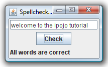

iPOJO in 10 minutes¶
This page presents how to use the iPOJO runtime and its associated service component model. The concepts of the service component model are introduced, followed by a simple example that demonstrates the features of iPOJO. This tutorial uses annotations to describe components. However, you can also use XML or a programmatic API to create iPOJO applications.
Introduction¶
iPOJO aims to simplify service-oriented programming on OSGi frameworks; the name iPOJO is an abbreviation for injected POJO. iPOJO provides a new way to develop OSGi service components, simplifying service component implementation by transparently managing the dynamics of the environment as well as other non-functional requirements. The iPOJO framework allows developers to more clearly separate functional code (i.e., POJOs) from the non-functional code (i.e., dependency management, service provision, configuration, etc.). At run time, iPOJO combines the functional and non-functional aspects. To achieve this, iPOJO provides a simple and extensible service component model based on POJOs.
The POJO concept¶
"POJO" is just an acronym for Plain Old Java Object, but it embodies a concept that the simpler and less intrusive the design of a given framework, the better. The name is used to emphasize that a given object is not somehow special, but is an ordinary Java Object. Martin Fowler, Rebecca Parsons and Josh Mackenzie coined the term POJO in September 2000: "We wondered why people were so against using regular objects in their systems and concluded that it was because simple objects lacked a fancy name. So we gave them one, and it's caught on very nicely." From a developer's perspective, the iPOJO framework strives as much as possible to only require POJOs.
iPOJO service component overview¶
A service component is able to provide and/or require services, where a service is an object that implements a given Java interface. In addition, iPOJO introduces a callback concept to notify a component about various state changes.
The component is a central concept in iPOJO. In the core iPOJO model, a component describes service dependencies, provided services, and callbacks; this information is recorded in the component's metadata. After components, the next most important concept in iPOJO is the component instance. A component instance is a special version of a component. By merging component metadata and instance configuration, the iPOJO runtime is able to discover and inject required services, publish provided services, and manage the component's life cycle.
A simple example¶
In this tutorial we will present how to:
- Publish an OSGi service
- Require an OSGi service
- Use lifecycle callbacks to activate and deactivate components
Presentation of the Spell application¶
To illustrate iPOJO features, we will implement a very simple application. This application is composed by three components: A component implementing a dictionary service A component requiring the dictionary service and providing a spellchecker service * A component requiring the spellchecker and providing an user interface

Preparing the tutorial¶
This tutorial is based on Ant. So, you need to have the Ant program accessible in your path (see here to download and install Ant). Download the tutorial archive available here and then unzip it. The archive contains seven directories:
- spell.services contains service interfaces used by the applications
- spell.english contains an implementation of the Dictionary service (containing English words)
- spell.checker contains an implementation of a Spell Checker. The spell checker requires a dictionary service and check if an input passage is correct (according to the words contained in the dictionary).
- spell.gui contains a very simple user interface. This component uses a spell checker service. Then the user can interact with the spell checker with this user interface.
- The task directory contains Ant tasks used to build the project
- The solution directory contains an already developed version of the application.
- Finally, the felix folder contains a configured version of the Felix runtime
The spell.services project¶
The spell.services project contains only service interfaces. It is not an iPOJO powered bundle.
Go inside the spell.services directory and open the file "src/spell/services/DictionaryService.java". It's a very simple service interface with one method:
package spell.services; /** * A simple service interface that defines a dictionary service. * A dictionary service simply verifies the existence of a word. **/ public interface DictionaryService { /** * Check for the existence of a word. * @param word the word to be checked. * @return true if the word is in the dictionary, * false otherwise. **/ public boolean checkWord(String word); }
Then, open the file src/spell/services/SpellChecker.java, and replace the TODO comment with for the following check method:
package spell.services; /** * A simple service interface that defines a spell checker service. * A spell checker service checks the spelling of all words in a * given passage. A passage is any number of words separated by * a space character and the following punctuation marks: comma, * period, exclamation mark, question mark, semi-colon, and colon. **/ public interface SpellChecker { /** * Checks a given passage for spelling errors. A passage is any * number of words separated by a space and any of the following * punctuation marks: comma (,), period (.), exclamation mark (!), * question mark (?), semi-colon (;), and colon(:). * @param passage the passage to spell check. * @return An array of misspelled words or null if no * words are misspelled. **/ public String[] check(String passage); }
Once created, you can build the project by launching Ant from the project directory.
$ ant Buildfile: build.xml clean: compile: [mkdir] Created dir: d:\clement\workspaces\sandbox\ipojo\examples\tutorial-ant\ spell.services\output [mkdir] Created dir: d:\clement\workspaces\sandbox\ipojo\examples\tutorial-ant\ spell.services\output\classes [javac] Compiling 2 source files to d:\clement\workspaces\sandbox\ipojo\examples\ tutorial-ant\spell.services\output\classes package: [bnd] spell.services 2 BUILD SUCCESSFUL Total time: 0 seconds
The created bundle is inside the output directory (spell.services.jar). The build process uses BND. The bundle manifest is described in the spell.services.bnd file.
Once this project is done, we are able to implement a Dictionary service.
The spell.english project: Providing an OSGi service¶
The spell.english project is a simple dictionary implementation of the Dictionary service. It contains few English words. This implementation is an iPOJO component.
The first step is to implement the service. Go in the spell.english directory and open the "src/spell/english/EnglishDictionary.java" file. Replace its content with:
package spell.english; import org.apache.felix.ipojo.annotations.Component; import org.apache.felix.ipojo.annotations.Instantiate; import org.apache.felix.ipojo.annotations.Provides; import spell.services.DictionaryService; /** * An implementation of the Dictionary service containing English words * see DictionaryService for details of the service. **/ @Component // It's an iPOJO Component @Provides // We provide a service @Instantiate // We declare an instance of our component public class EnglishDictionary implements DictionaryService { // The set of words contained in the dictionary. String[] dictionary = { "welcome", "to", "the", "ipojo", "tutorial" }; /** * Implements DictionaryService.checkWord(). Determines * if the passed in word is contained in the dictionary. * @param word the word to be checked. * @return true if the word is in the dictionary, * false otherwise. **/ public boolean checkWord(String word) { word = word.toLowerCase(); // This is very inefficient for (String dict : dictionary) { if (dict.equals(word)) { return true; } } return false; } }
Notice that this class does not contains neither OSGi nor iPOJO specific code except a few annotations. It is just an implementation of the Dictionary Service interface.
The @Component annotation is used to declare an iPOJO component. The @Provides annotation indicates that the component provides a service. Provided service interfaces are computed by iPOJO, so it is not necessary to specify them. Finally, the @Instantiate annotation instructs iPOJO to create an instance of our component. The relation between components and instances is the same than between classes and objects in the object-oriented programming.
Then, we are able to create the bundle. In the spell.english directory launch the ant command:
$ ant Buildfile: /Users/clement/Projects/felix-trunk/ipojo/distributions/ten-minutes-tutorial/target/test/spell.english/build.xml clean: buildclasspath: [copy] Copying 1 file to /Users/clement/Projects/felix-trunk/ipojo/distributions/ten-minutes-tutorial/target/test/spell.english/libs [copy] Copying 1 file to /Users/clement/Projects/felix-trunk/ipojo/distributions/ten-minutes-tutorial/target/test/spell.english/libs compile: [mkdir] Created dir: /Users/clement/Projects/felix-trunk/ipojo/distributions/ten-minutes-tutorial/target/test/spell.english/output [mkdir] Created dir: /Users/clement/Projects/felix-trunk/ipojo/distributions/ten-minutes-tutorial/target/test/spell.english/output/classes [javac] /Users/clement/Projects/felix-trunk/ipojo/distributions/ten-minutes-tutorial/target/test/spell.english/build.xml:57: warning: 'includeantruntime' was not set, defaulting to build.sysclasspath=last; set to false for repeatable builds [javac] Compiling 1 source file to /Users/clement/Projects/felix-trunk/ipojo/distributions/ten-minutes-tutorial/target/test/spell.english/output/classes package: [bnd] # addAll 'output/classes' with :, [bnd] # addAll 'spell.english.bnd' with , [bnd] Updating classpath after classpathref setting [bnd] # spell.english (spell.english.jar) 1 [ipojo] Input bundle file : /Users/clement/Projects/felix-trunk/ipojo/distributions/ten-minutes-tutorial/target/test/spell.english/output/spell.english.jar [ipojo] No metadata file found - trying to use only annotations [ipojo] Start manipulation Apache Felix iPOJO Manipulator - 1.9.0-SNAPSHOT [ipojo] Bundle manipulation - SUCCESS [ipojo] Output file : /Users/clement/Projects/felix-trunk/ipojo/distributions/ten-minutes-tutorial/target/test/spell.english/output/spell.english.jar BUILD SUCCESSFUL Total time: 0 seconds
The created bundle is inside the output directory (spell.english.jar). The build process is based on BND and on the iPOJO Ant task. The manifest of the bundle is described in the spell.english.bnd file.
The spell.checker project: Requiring an OSGi service¶
The spell.checker project aims to provide a spell checker service. However, to serve this service, this implementation requires a dictionary service. During this step, we will create an iPOJO component requiring a Dictionary service and providing the Spell Checker service.
First, go the the spell.checker directory and open the file src/spell/checker/SpellCheck.java. Replace its content with:
package spell.checker; import org.apache.felix.ipojo.annotations.Component; import org.apache.felix.ipojo.annotations.Instantiate; import org.apache.felix.ipojo.annotations.Provides; import org.apache.felix.ipojo.annotations.Requires; import spell.services.DictionaryService; import spell.services.SpellChecker; import java.util.ArrayList; import java.util.List; import java.util.StringTokenizer; @Component @Provides @Instantiate public class SpellCheck implements SpellChecker { @Requires // This is a service dependency. private DictionaryService dictionary; /** * Implements SpellChecker.check(). Checks the given passage for misspelled words. * * @param passage the passage to spell check. * @return An array of misspelled words or null if no words are misspelled. */ public String[] check(String passage) { // No misspelled words for an empty string. if ((passage == null) || (passage.length() == 0)) { return null; } List<String> errorList = new ArrayList<String>(); // Tokenize the passage using spaces and punctuation. StringTokenizer st = new StringTokenizer(passage, " ,.!?;:"); // Loop through each word in the passage. while (st.hasMoreTokens()) { String word = st.nextToken(); // Check the current word. if (!dictionary.checkWord(word)) { // If the word is not correct, then add it // to the incorrect word list. errorList.add(word); } } // Return null if no words are incorrect. if (errorList.size() == 0) { return null; } // Return the array of incorrect words. System.out.println("Wrong words:" + errorList); return errorList.toArray(new String[errorList.size()]); } }
This class implements the SpellChecker service interface as it provides it. Moreover, it has a special field dictionary. This field represents the required service. iPOJO injects a Dictionary service when needed. So, the class can use it directly. Notice that this class as no OSGi specific code, both the service providing and the requiring are managed by iPOJO and described using annotations. When the used dictionary service leaves, iPOJO tries to find another provider. If no more providers are available, the instance is invalidated, and the provided service is withdrawn from the service registry.
The @Component, @Instantiate and @Provides annotations were already presented. The @Requires annotation specifies a service dependency. This example shows field injection, but iPOJO also supports constructor injection and method injection (with @Bind and @Unbind).
Finally, we are able to build the bundle. As for previous projects, launch Ant from the project directory.
The spell.checker.gui project¶
The spell.check.gui project contains a very simple user interface (in Swing) allowing a user to interact with a spell checker service.
Go to the spell.checker.gui directory. Open the src\spell\gui\SpellCheckerGui.java. Replace its content with:
package spell.gui; import org.apache.felix.ipojo.annotations.*; import spell.services.SpellChecker; import javax.swing.*; /** * A very simple Gui interacting with the CheckSpeller service */ @Component @Instantiate public class SpellCheckerGui extends JFrame { private static final long serialVersionUID = 1L; /** * Swing component where the user write the passage to check. */ private JTextField passage = null; /** * Area where the result is displayed. */ private JLabel result = null; /** * Service dependency on the SpellChecker. */ @Requires private SpellChecker checker; /** * Constructor. * Initialize the GUI. */ public SpellCheckerGui() { super(); initComponents(); this.setTitle("Spellchecker Gui"); } /** * Initialize the Swing Gui. */ private void initComponents() { java.awt.GridBagConstraints gridBagConstraints; // The check button JButton checkButton = new JButton(); result = new JLabel(); passage = new JTextField(); setDefaultCloseOperation(javax.swing.WindowConstants.EXIT_ON_CLOSE); // Stop Felix... getContentPane().setLayout(new java.awt.GridBagLayout()); checkButton.setText("Check"); checkButton.addActionListener(new java.awt.event.ActionListener() { public void actionPerformed(java.awt.event.ActionEvent e) { check(); } }); gridBagConstraints = new java.awt.GridBagConstraints(); gridBagConstraints.gridx = 0; gridBagConstraints.gridy = 1; gridBagConstraints.insets = new java.awt.Insets(2, 2, 2, 2); getContentPane().add(checkButton, gridBagConstraints); result.setPreferredSize(new java.awt.Dimension(175, 20)); gridBagConstraints = new java.awt.GridBagConstraints(); gridBagConstraints.gridx = 0; gridBagConstraints.gridy = 2; gridBagConstraints.fill = java.awt.GridBagConstraints.HORIZONTAL; gridBagConstraints.insets = new java.awt.Insets(2, 2, 2, 2); getContentPane().add(result, gridBagConstraints); passage.setPreferredSize(new java.awt.Dimension(175, 20)); gridBagConstraints = new java.awt.GridBagConstraints(); gridBagConstraints.gridx = 0; gridBagConstraints.gridy = 0; gridBagConstraints.fill = java.awt.GridBagConstraints.HORIZONTAL; gridBagConstraints.insets = new java.awt.Insets(2, 2, 2, 2); getContentPane().add(passage, gridBagConstraints); pack(); } /** * Check Button action. * Collects the user input and checks it. */ private void check() { String[] result = checker.check(passage.getText()); if (result != null) { this.result.setText(result.length + " word(s) are misspelled"); } else { this.result.setText("All words are correct"); } } /** * Start callback. * This method will be called when the instance becomes valid. * It set the Gui visibility to true. */ @Validate public void start() { this.setVisible(true); } /** * Stop callback. * This method will be called when the instance becomes invalid or stops. * It deletes the Gui. */ @Invalidate public void stop() { this.dispose(); } }
Look at the three last methods. The check methods collects the user input and uses a Check speller service to check this input. The speller is injected into the checker field thanks to the @Requires annotation. This method is called when the user presses the button. The start and stop methods are lifecycle callbacks. As we display the user interface when the instance is created and to dispose it when the instance stops, we need a way to be notified when we need to execute these actions. iPOJO provides an easy way to do this. The component provides two callback methods for its activation and deactivation. Callbacks are used when the component needs to be informed about a component state change. In iPOJO, the component state is either INVALID (i.e., not all of the component's constraints are satisfied) or VALID (i.e., all of the component's constraints are satisfied). In this example, the start callback method sets the GUI visibility to true; the stop callback method deletes the GUI. The @Validate and @Invalidate annotations are used to specify these callbacks.
Once this file is created, you can compile the project by launching ant in the spell.checker.gui directory.
Running the application¶
We have all the bundles required to start playing with the application.
To run the example, start Felix. A distribution of Felix is provided in the felix-framework-VERSION directory. This version is configured to launch iPOJO automatically. From the Felix directory, launch the following command to start the framework. Then enter a profile name.
java -jar bin/felix.jar
You can check installed bundles by using the 'lb' command:
____________________________
Welcome to Apache Felix Gogo
g! lb
START LEVEL 1
ID|State |Level|Name
0|Active | 0|System Bundle (4.2.1)
1|Active | 1|Apache Felix Bundle Repository (1.6.6)
2|Active | 1|Apache Felix Gogo Command (0.12.0)
3|Active | 1|Apache Felix Gogo Runtime (0.10.0)
4|Active | 1|Apache Felix Gogo Shell (0.10.0)
5|Active | 1|Apache Felix iPOJO (1.9.0.SNAPSHOT)
6|Active | 1|Apache Felix iPOJO Gogo Command (1.0.1)
g!
iPOJO runtime is the bundle 5. Once started, install the four created bundles as below:
start file:../spell.services/output/spell.services.jar start file:../spell.english/output/spell.english.jar start file:../spell.checker/output/spell.checker.jar start file:../spell.checker.gui/output/spell.checker.gui.jar
The new set of bundles is:
g! lb
START LEVEL 1
ID|State |Level|Name
0|Active | 0|System Bundle (4.2.1)
1|Active | 1|Apache Felix Bundle Repository (1.6.6)
2|Active | 1|Apache Felix Gogo Command (0.12.0)
3|Active | 1|Apache Felix Gogo Runtime (0.10.0)
4|Active | 1|Apache Felix Gogo Shell (0.10.0)
5|Active | 1|Apache Felix iPOJO (1.9.0.SNAPSHOT)
6|Active | 1|Apache Felix iPOJO Gogo Command (1.0.1)
7|Active | 1|spell.services (0.0.0)
8|Active | 1|spell.english (0.0.0)
9|Active | 1|spell.checker (0.0.0)
10|Active | 1|spell.checker.gui (0.0.0)
iPOJO provides a command to check created instances:
g! instances Instance org.apache.felix.ipojo.arch.gogo.Arch-0 -> valid Instance spell.checker.SpellCheck-0 -> valid Instance spell.gui.SpellCheckerGui-0 -> valid Instance spell.english.EnglishDictionary-0 -> valid
As you can see, all our instances are valid.
In the gui (that should have appeared), you can interact with the spell service by entering a passage and clicking on the check button:

Then, stop the Dictionary service provider (with the stop 8) command. The GUI disappears. Indeed, Spell Checker service cannot be provided as it depends on the Dictionary service.
You can check the validity of the instances and see that the SpellChecker and the Gui are invalid.
g! instances Instance org.apache.felix.ipojo.arch.gogo.Arch-0 -> valid Instance spell.checker.SpellCheck-0 -> invalid Instance spell.gui.SpellCheckerGui-0 -> invalid
Then, restart the Dictionary service provider with the start 8 command. The GUI reappears immediately. You can try to stop the check speller service provider without stopping the dictionary service provider with the stop 9 command. As for the last manipulation, the GUI disappears.

This time, the Gui is invalid, but the English dictionary is valid:
g! instances Instance org.apache.felix.ipojo.arch.gogo.Arch-0 -> valid Instance spell.gui.SpellCheckerGui-0 -> invalid Instance spell.english.EnglishDictionary-0 -> valid
Conclusion¶
We saw how to use easily iPOJO to build service-oriented component. In this tutorial, we have demonstrated how to:
- Publish OSGi services
- Require OSGi services
- Use lifecycle callbacks to activate and deactivate components
iPOJO provides a lot of others features that you can try in the others available tutorials. Subscribe to the Felix users mailing list by sending a message to users-subscribe@felix.apache.org; after subscribing, email questions or feedback to users@felix.apache.org.